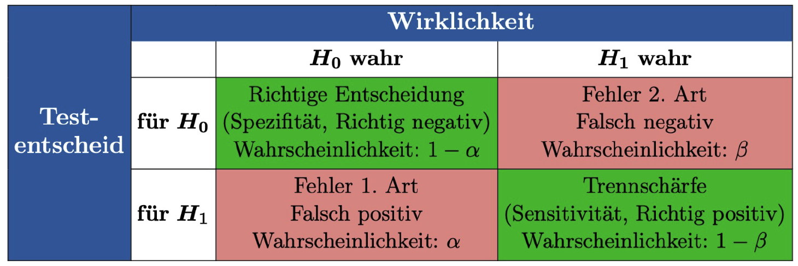
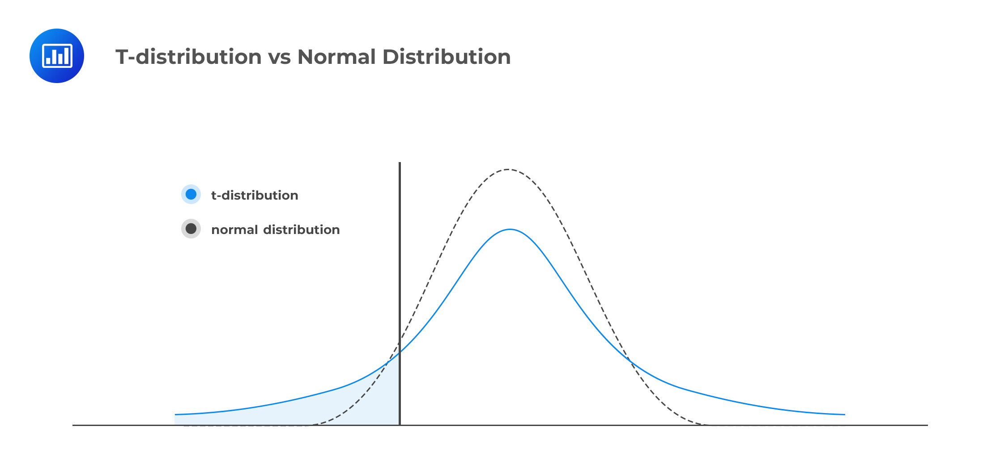

Woche 9: Hypothesentests und t-Tests
1 Einführung in Hypothesentests
Ein statistischer Hypothesentest ist ein Verfahren, um anhand von Daten zu entscheiden, ob eine bestimmte Annahme (Hypothese) über die Grundgesamtheit haltbar ist oder nicht.
1.1 Die Grundidee: Das Gerichtsverfahren
Man kann sich einen Hypothesentest wie ein Gerichtsverfahren vorstellen:
- Nullhypothese (\(H_0\)): Der Angeklagte ist unschuldig (Status Quo, kein Effekt).
- Alternativhypothese (\(H_1\)): Der Angeklagte ist schuldig (neue Entdeckung, ein Effekt liegt vor).
- Ziel: Wir suchen nach “Beweisen” (Daten), die so stark gegen \(H_0\) sprechen, dass wir die Unschuldsvermutung aufgeben müssen.
1.2 Fehlerarten beim Testen
Da wir nur eine Stichprobe betrachten, können wir Fehlentscheidungen treffen:
| Fehler | Bezeichnung | Bedeutung |
|---|---|---|
| Fehler 1. Art | \(\alpha\) (Signifikanzniveau) | \(H_0\) wird abgelehnt, obwohl sie wahr ist (“falscher Alarm”). |
| Fehler 2. Art | \(\beta\) | \(H_0\) wird beibehalten, obwohl \(H_1\) wahr ist (“verpasster Effekt”). |
Das Signifikanzniveau \(\alpha\) (meist 5%) legt fest, wie hoch das Risiko für einen Fehler 1. Art maximal sein darf.

1.3 Der p-Wert
Der p-Wert ist die Wahrscheinlichkeit, ein Stichprobenresultat zu erhalten, das mindestens so extrem ist wie das beobachtete, unter der Annahme, dass \(H_0\) wahr ist.
- \(p < \alpha\): Das Ergebnis ist signifikant \(\rightarrow H_0\) wird abgelehnt.
- \(p \ge \alpha\): Das Ergebnis ist nicht signifikant \(\rightarrow H_0\) wird beibehalten.
1.4 Die Macht eines Tests
Die Macht (Power) eines Tests ist die Wahrscheinlichkeit, dass der Test \(H_0\) ablehnt, wenn tatsächlich \(H_1\) wahr ist. Also wie wahrscheinlich detektieren wir einen echten Effekt? Sie hängt von der Effektgröße, der Stichprobengröße und dem Signifikanzniveau ab. —
2 Der t-Test
Der t-Test wird verwendet, um Hypothesen über Mittelwerte (\(\mu\)) zu prüfen, wenn die Varianz der Grundgesamtheit unbekannt ist.
2.1 Einstichproben-t-Test
Man vergleicht den Mittelwert einer Stichprobe mit einem fest vorgegebenen Sollwert \(\mu_0\).
Beispiel: Eine Tablette soll 100 mg Wirkstoff enthalten. Wir testen, ob die Produktion systematisch davon abweicht.
- \(H_0: \mu = 100\)
- \(H_1: \mu \neq 100\) (zweiseitig)
2.1.1 Teststatistik \(T\):
Die Teststatistik ist der “Prüfwert”, den wir berechnen, um zu sehen, wie weit unsere Daten vom erwarteten Wert (\(\mu_0\)) entfernt liegen. \[T = \frac{\overline{X} - \mu_0}{S / \sqrt{n}}\]
- \(\overline{X}\): Der beobachtete Durchschnitt deiner Stichprobe.
- \(\mu_0\): Der hypothetische Sollwert aus der Nullhypothese \(H_0\).
- \(S\): Die Standardabweichung der Stichprobe.
- \(n\): Die Anzahl der Beobachtungen.
2.1.2 Warum unterscheidet sich \(T\) vom Stichprobenmittelwert?
Während der Mittelwert \(\overline{X}\) in der Originaleinheit (z. B. mg, cm, kg) gemessen wird, ist \(T\) eine standardisierte Maßzahl.
- Verschiebung (Zentrierung): Wir berechnen die Differenz \((\overline{X} - \mu_0)\). Das sagt uns, wie groß die Abweichung absolut ist.
- Maßstabsanpassung (Standardisierung): Wir teilen durch den Standardfehler (\(S / \sqrt{n}\)). \(T\) misst also nicht in Zentimetern, sondern in Standardfehlern.
- Ein \(T\)-Wert von 2 bedeutet: “Unser Stichprobenmittelwert liegt 2 Standardfehler weit weg vom Sollwert.”
- Dies macht Ergebnisse vergleichbar, egal was wir für Dinge messen.
2.1.3 Warum t-Verteilung statt Normalverteilung?
Nach dem Zentralen Grenzwertsatz sind Mittelwerte bei großen Stichproben zwar normalverteilt, aber es gibt einen Haken: Die Varianz.
- Wüssten wir die wahre Varianz \(\sigma^2\) der Grundgesamtheit, dürften wir die Normalverteilung nutzen.
- In der Realität müssen wir \(\sigma^2\) aber durch die Stichprobenvarianz \(S^2\) schätzen.
- Diese Schätzung ist unsicher, besonders bei kleinen Stichproben.
Die t-Verteilung korrigiert diese Unsicherheit. Sie hat im Vergleich zur Normalverteilung “Fat Tails” (breitere Ränder). Das bedeutet, dass extreme Abweichungen bei kleinen Stichproben öfter vorkommen können. Je größer die Stichprobe \(n\) wird, desto ähnlicher wird die t-Verteilung der Normalverteilung.

2.1.4 So wird das Resultat unseres Einstichproben-t-Tests berechnet:
- Setze ein Signifikanzniveau \(\alpha\) (z.B. 0.05).
- Bestimme die Freiheitsgrade: \(df = n - 1\).
- Unser Signifikanzniveau und unsere Freiheitsgrade definieren eine t-Verteilung, auf der wir nun testen.
- Wir bestimmen die kritischen Werte für die Ablehnungsbereiche:
qt(1 - alpha/2, df)(zweiseitige Tests). - Berechnete den \(T\)-Wert unserer Stichprobe und vergleiche ihn mit dem kritischen Wert aus der t-Verteilung. Liegt der \(T\)-Wert außerhalb des kritischen Bereichs, lehnen wir \(H_0\) ab.
In R können wir diesen Test mit der Funktion t.test() durchführen, welche die oben genannten Schritte automatisch erledigt.
In R:
t.test(stichprobe, alternative = "two.sided", mu = 100, conf.level = 0.95)Der resultierende p-Wert gibt an, wie wahrscheinlich es ist, ein so extremes Ergebnis zu erhalten, wenn \(H_0\) wahr ist. Ein p-Wert kleiner als \(\alpha\) führt zur Ablehnung von \(H_0\), das heisst es gibt eine systematische Abweichung von 100 mg, wenn der p-Wert kleiner als unser Signifikanzniveau ist.
2.2 Zweistichproben-t-Test (Unabhängig)
Vergleicht die Mittelwerte zweier unabhängiger Gruppen (z.B. Behandlungsgruppe vs. Kontrollgruppe).
- Voraussetzung: Beide Gruppen sind normalverteilt.
- Varianz: Man unterscheidet, ob die Varianzen der beiden Gruppen gleich oder verschieden sind (Welch-Test).
2.3 Gepaarter t-Test
Wird verwendet, wenn Messwerte paarweise zusammengehören (z.B. Messung vor und nach einem Training bei derselben Person). Hierbei wird der t-Test auf die Differenzen der Paare angewendet.
3 Durchführung in R
R bietet eine zentrale Funktion für alle Varianten des t-Tests: t.test().
# Einstichproben-t-Test
t.test(stichprobe, mu = 100)
# Zweistichproben-t-Test (unabhängig)
t.test(gruppe1, gruppe2, paired = FALSE)
# Gepaarter t-Test
t.test(messung_vorher, messung_nachher, paired = TRUE)